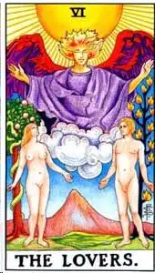
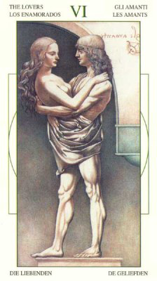
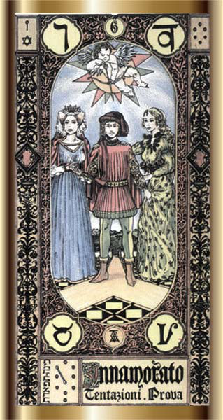
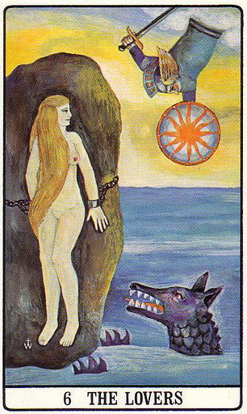
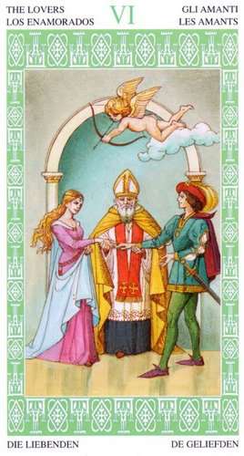

Влюбленные











3+2+1
Идзанами Идзанаки
Мне трудно пока полностью понять эту карту, наверное полное описание сделаю после того, как с тобой о ней пообщаемся.
Карта любви, чувств, союза, взаимной ответсвенности. По астрологической символике мне кажется Весы.
На некоторых картах женщин две, на мифическом таро даже три, а мужчина по сути делает выбор. Какая лучше )) На мифическом Таро там Афина, Афродита и Гера, спорят кто красивее, вроде так )) А какому-то бедняге выпала доля выборать одну из трех (не повезло парню, какое бы решение не принял, две оставшиеся женщины не простят). Вот тут Весы и включаются ))
Ну вот как-то так...
Адам и Ева
фокус внимание на разницу
8м, 10м(солнце) пересчения мага и влюбленых
детали на карте (таро Уэйта):
Мужчина и Женщина (одно дополняет другое), Солнце в зените - теплота, осознание, любовь
Позади людей райские деревья, на сколько я помню, кпеон-то из них называетя "Дерево познания Добра и Зла",
Мужчина на троне, часто между двумя колонами, что "передает привет " от 2СА
На мужчине тройная корна, тройной крест (Уэйт), делает жест благославления (как то это немного веет "во имя Отца, и Сына, и святого Духа..."), то есть опять троица.
В ногах два перерещенных ключа (ключи что открывают???) и два служителя церкви, что указывает, что мужчина на троне имеет самый высший сан - он обладает властью.
На некоторых картах жрец сидит с открытой книгой, что символизирует, что он источник знаний.
цвет: красный (энергия, выделение главного), желтый (теплота, солнечность), синий (отдаленность)
на карте Кроули: "желтый жрец на черном фоне - луч света в темном царстве" :)
в некоторых картах присутсвует немного бирюзового цвета (связь с Венерой)
фигура:
троичная корона, крест, книга
символ:
пентаграма (звезда)
буква:
М - тут уже как 5 точек
ощущения
Ощущение справедливости, морали и чистиоты, в этой карте проявляются ценности человека.
Также сильно веет темой обучения, здесь есть источник знаний, законов природы, мира, вселенной. Знания которые помогают постичь полноту вселенной. Он авторитет, он знает как надо.
И еще, все таки это еще карта некоторого официоза, церемоний, ритуальности.
ключевые слова: ценности, мораль, этика, совесть, благоразумие, религиозность, ритуал, традиции, учение, обучение, образование
запах:
ладан, анис, сандал. Запах новой книги, запах свечи медовой церковной, запах библиотеки.
звук:
молитва нараспев в церкви с характерным эхом (я знакома с православной культурой)
вкус:
церковный кагор (опять это из ритуала причастия)
астрология:
Юпитер, Солнце в Стрельце
мифология:
Учитель, наставник, кстати Хирон )), первосвященик, Апостол Христа
Фразы: "Что таколе хорошо и что такое плохо". "смысл жизни"
способности: взывать к совести, к ценностям.
окружение: лампада, икона, книга (библия), учебник
амулеты: крестик, любой символ веры.